조경산업기사 (2003-08-31 기출문제)
1과목: 조경계획 및 설계
1. 조경계획가가 지향을 해야 하는 발전방향과 거리가 먼 것은?
- 행동과학적 접근 방법
- 계획가의 직관적 접근 방법
- 컴퓨터에 의한 접근 방법
- 환경지각적 접근 방법
(정답률: 31%)

2. 그림과 같이 수평거리가 50m 씩인 ABCD의 정방형 대지상에서 A점의 표고(53.8m), D점의 표고(52.4m) 일 때
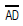
상의 경사도는?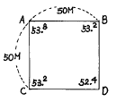
- 약 3%
- 약 2%
- 약 2.8%
- 약 0.5%
(정답률: 70%)
3. 미기후 분석에 관한 설명 중 올바르게 분석된 것은?
- 태양 복사열을 받는 정도는 북사면일 경우 경사가 완만할수록 많은 열을 받는다.
- 안개 및 서리의 발생은 지형이 높고 배수가 양호한 지역일수록 자주 발생한다.
- 공기의 유통정도는 계곡의 폭이 넓고, 깊이가 얕을 수록 잘 되지 않는다.
- 남사면일 경우 경사가 완만할수록 태양복사열을 많이 받는다.
(정답률: 37%)
4. 적정 이용객수에 대한 설명이다. 옳지 않은 것은?
- 사회적 수요가 생태적 수요 능력을 넘지 않을 경우에는 사회적 수요를 기준으로 한다.
- 사회적 수요가 생태적 수요 능력을 넘는 경우에는 생태적 수요를 기준으로 한다.
- 사회적 수요가 생태적 수요능력을 넘는 경우에는 입장객 수를 제한하는 방법으로 대처한다.
- 사회적 수요가 생태적 수요를 훨씬 초과할 경우에는 최대일 이용자수를 낮게 적용하여 산출한다.
(정답률: 50%)
5. 주택정원을 계획할 때 가장 먼저 고려하여야 할 사항은 무엇인가?
- 건물과 정원과의 관계
- 정원 내에 도입할 수종 결정
- 외부 통행인의 시선 차폐
- 주차 문제의 해결
(정답률: 87%)
6. 지각 요소에 대한 설명이다. 잘못 설명된 것은?
- 자연경관은 부드러운 질감을 많이 갖는다.
- 자연경관은 색채에 있어서 자연스런 조화가 많다.
- 도시경관은 딱딱한 질감을 가지며 색채는 대비를 이루는 경우가 많다.
- 도시경관의 지각요소는 시각뿐이다.
(정답률: 70%)
7. 관광지, 유원지 등의 수용력을 산정할 때 활용하는 공식중의 하나인 계절형과 최대일율이 올바르게 짝 지어지지 않은 것은 어느 것인가?
- Ⅰ계절형= 1/30
- Ⅱ계절형= 1/40
- Ⅲ계절형= 1/50
- Ⅳ계절형= 1/100
(정답률: 83%)
8. 도시공원법에 의한 묘지공원의 공원시설 중에서 필요 없는 것은?
- 조경시설
- 유희시설
- 휴양시설
- 편익시설
(정답률: 75%)
9. 공동주택의 배치에 있어서 인동간격에 대한 설명 중 적당하지 않은 것은?
- 인동간격의 기준은 대체로 동지 때의 정오를 기준으로 4시간의 일조를 받을 수 있도록 하는 것이다.
- 도심부의 고층아파트에서는 소음문제도 인동간격으로 해결할 수가 있다.
- 여름철에 고온 다습한 기후에서는 통풍 및 채광효과도 인동간격 결정에서 고려하여야 한다.
- 인동간격은 프라이버시의 확보와 어린이놀이터 및 식재를 위한 공간 구성에 중요한 역할을 한다.
(정답률: 53%)
10. 공장조경에 요구되는 기능이라 할 수 없는 것은?
- 공장의 기계적 공간과 푸르름의 자연경관의 공존을 도모한다.
- 종업원들의 신체적 피로회복을 도모하여 작업능률의 향상을 기한다.
- 공장 앞뜰구역(前庭區)은 운동공간, 주차장 등을 구성한다.
- 기업의 홍보에 기여하는 측면을 예측할 필요가 있다.
(정답률: 59%)
11. 어린이 놀이 시설물의 설계시 가장 먼저 고려해야 할 사항은?
- 어린이의 신체치수와 동작치수를 고려한다.
- 미적감각을 나타내어 흥미있게 한다.
- 모험심을 주도록 해야 한다.
- 기능적이어야 한다.
(정답률: 75%)
12. 케빈 린치는 도시의 이미지를 다섯가지 요소로 해석하고 있다. 다음 린치가 주장하는 요소 중 패스(path)의 특성과 관련이 가장 적은 항목은?
- 연속성(連續性)
- 방향성(方向性)
- 지표성(指標性)
- 기종점(起終点)
(정답률: 50%)
13. 다음 중 유원지의 특징을 잘못 설명한 것은?
- 자연자원을 적극적으로 이용하고자 한다.
- 정적(靜的)이고 소극적인 활동이 위주가 된다.
- 영리 목적의 상업 활동이 허용된다.
- 시민의 복리향상에 기여한다.
(정답률: 71%)
14. 다음 중 환경조각(environmental sculpture)의 개념과 기능적으로 가장 관계가 적은 것은?
- 어린이를 위한 놀이조각(play sculpture)
- 공간의 구성요소인 분수조각
- 공원에 세워지는 동상(銅像)
- 조각적인 벤취나 조명장치
(정답률: 46%)
15. 비대칭의 효과를 설명한 것 중 틀린 것은?
- 좌우 대칭에 비하여 복잡한 느낌을 준다.
- 물체의 색채, 무게, 질감 등으로 균형을 잡으므로 공간의 여백이 생길 경우가 있다.
- 좌우 대칭에 비해 정돈성이 있으며, 동적인 느낌을 준다.
- 주로 서양 정원에 비해 동양정원에서 많이 사용한 대칭 수법이다.
(정답률: 65%)
16. 레크레이션 공간의 동선계획 기준으로서 잘못 설명된 것은?
- 보행동선과 차량동선이 교차할 때에는 차량의 원할한 소통을 위하여 차량동선이 우선적으로 고려 되어져야 한다.
- 통행량이 많을수록 긴밀한 관계를 갖는 것을 뜻하므로 가능한한 그 동선은 짧게 한다.
- 보행자를 위한 동선은 다소 우회하더라도 좋은 전망등 쾌적한 분위기를 줄 수 있도록 선정한다.
- 교통 및 동선의 패턴은 일정 순환체계를 갖도록 함이 바람직하다.
(정답률: 80%)
17. 고려시대의 조경을 특징 지우는 시설물은?
- 곡수거(曲水渠), 신선도(神仙島), 선유지(船遊池)
- 방지(方池), 원도(圓島), 용이나 거북이의 상(像)
- 석가산(石假山), 화원(花園), 격구장(擊逑場)
- 계단식후원, 모정, 정심수(庭心樹)
(정답률: 71%)
18. 공원녹지의 수요분석 중 양적수요에 있어 도시민이 일상생활에서 필요한 산소의 공급원으로서 요구되는 수림지 면적을 산출하여 공원녹지의 수요를 결정하는 방식은?
- 기능배분 방식
- 생태학적 방식
- 인구기준 원단위 적용방식
- 생활권별 배분방식
(정답률: 54%)
19. 내· 외부 공간간의 괴리를 줄여 주고, 사람들이 건물을 드나들 때 옥내· 외 두 공간 사이에 완만한 변화를 주는 공간을 무엇이라 하는가?
- 동선공간
- 경계공간
- 휴게공간
- 전이공간
(정답률: 92%)
20. 설계상의 주요 기능과 공간들간의 가장 적절한 최선의 관계가 무엇인가를 알아보기 위한 목적으로 그려지는 도면은 무엇인가?
- 기능 다이아그램
- 조사분석도
- 개념도
- 기본계획도
(정답률: 34%)
2과목: 조경식재
21. 교목의 생육 환경조성을 위해 일반적으로 지하 수위는 지표로 부터 어느 정도의 깊이로 유지하는 것이 좋은가?
- 0.5∼1m
- 1.5∼2.0m
- 3∼4m
- 5m 이상
(정답률: 85%)
22. 우점종에 대한 설명으로 올바른 것은?
- 우점종과 그것이 소속된 영양집단의 생산력과는 관계가 없다.
- 식물 군락을 대표하는 종으로써 종 분류의 기준으로 사용된다.
- 어떤 특정 공간의 식물사회에서 양적으로 가장 우세한 상태를 보이고 있는 종이다.
- 식물군락의 우점종은 기후· 지형· 토양 등의 외적 환경에는 큰 영향을 받지 않는다.
(정답률: 50%)
23. 나무심는 구덩이 파기에 대한 설명이다. 이 중 틀린것은?
- 구덩이는 나무분 보다 크고 깊게 한다.
- 구덩이에서 파낸 흙으로 나무를 심고자 할 때는 토양의 상태를 고려하여야 한다.
- 파 놓은 구덩이가 너무 깊어 흙을 메워서 심어야 할 때는 고운 흙으로 다져지지 않게 흙을 메운다.
- 구덩이를 팔 때는 돌이나 자갈, 나무 뿌리, 풀 뿌리들을 모두 골라낸다.
(정답률: 7%)
24. 꽃과 열매의 관상가치가 모두 높은 수목이 아닌 것은?
- 소귀나무, 능금나무
- 개회나무, 참조팝나무
- 모감주나무, 산사나무
- 마가목, 산수유
(정답률: 54%)
25. 식재 평면도에 표시하지 않는 내용은?
- 수목 인출선
- 수종 목록
- 방위와 스케일
- 수목 가격
(정답률: 84%)
26. 다음은 자유형 식재에 대한 설명이다. 이 중 적합하지 않은 것은?
- 인공적이기는 하나 그 선이나 형태가 자유롭고 비대칭적인 수법이 쓰인다.
- 기능성이 중요시되고 있다.
- 직선적인 형태를 갖추는 경우가 많아지고 단순 명쾌한 형태를 나타낸다.
- 부등변 삼각형 식재수법을 많이 쓴다.
(정답률: 53%)
27. 자연풍경식 식재양식에 해당되는 것은?
- 대식(對植)
- 교호식재(交互植栽)
- 집단식재(集團植栽)
- 무리심기(群植)
(정답률: 50%)
28. 4월에 잎이 피기 전에 붉은색의 꽃을 피워 화색배합에 중요한 수종은?
- Amorpha fruticosa L.
- Robinia pseudo-acacia L.
- Cercis chinensis BUNGE
- Ilex cornuta LINDLEY et PAX.
(정답률: 46%)
29. 수목의 생태적 특성상 음수(陰樹)인 것은?
- 목련
- 구상나무
- 은행나무
- 느티나무
(정답률: 86%)
30. 고속도로 중앙분리대의 식재방식 중 랜덤식식재법은?
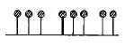
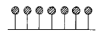
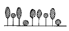
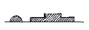
(정답률: 65%)
31. 다음 설명 중 틀린 것은?
- 침엽수는 아황산가스의 피해를 받으면 잎의 끝에 반문이 생긴다.
- 수분이 부족되면 잎이 쇠약해진다.
- 활엽수는 아황산가스의 피해로 엽맥간에 윤곽을 갖는 황적색의 반문을 형성한다.
- 토양 수분의 과잉은 새싹이 트거나 잎이 못 자라거나 한다.
(정답률: 55%)
32. 다음 중 염분에 강한 나무는?
- 해송, 리기다소나무
- 목련, 단풍나무
- 히말라야시다, 가시나무
- 삼나무, 소나무
(정답률: 63%)
33. 다음 중 낙엽침엽수는?
- 히말라야시다
- 은행나무
- 편백
- 리기다소나무
(정답률: 75%)
34. 방풍용 수종으로 적합한 것은 다음 중 어느 것인가?
- 리기다소나무, 잣나무
- 버드나무, 미류나무
- 플라타나스, 양버들
- 버드나무, 녹나무
(정답률: 57%)
35. 정원구성상 배식이 지니고 있는 의의와 관계가 먼 것은?
- 수(數)로서의 구성
- 관련(關聯)및 대립(對立)으로서의 구성
- 생산성(生産性)으로서의 구성
- 아름다움으로서의 구성
(정답률: 알수없음)
36. 가로수 식재방법 으로 가장 알맞는 식재 방법은 다음 그림 중 어느 것인가?
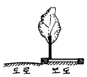
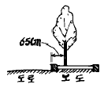
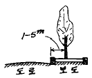
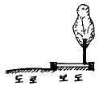
(정답률: 77%)
37. 방풍식재에 대한 설명으로 옳지 않은 것은?
- 방풍효과가 미치는 범위는 수목의 높이와 관계를 가진다.
- 감속량은 수림의 밀도에 따라 좌우된다.
- 수림의 지하고가 높을 때 큰 방풍효과가 기대된다.
- 바람 아래 쪽 수고의 3∼5배에 해당되는 지점에서 가장 효과가 크다.
(정답률: 알수없음)
38. 다음 중 고층건물 주변에 습하고 그늘진 곳에서 잘 자랄 수 없는 지피식물은?
- 대사초
- 맥문동
- 버뮤다그라스(bermuda grass)
- 아주가(ajuga)
(정답률: 54%)
39. 다음 수목 중 잎보다 꽃이 먼저 피는(先花後葉) 것이 아닌 것은?
- 미선나무, 산수유
- 일본목련, 함박꽃나무
- 개나리, 진달래
- 박태기, 생강나무
(정답률: 50%)
40. 식재설계의 원칙을 설명한 내용이다 틀린 것은?
- 식물배치는 설계구역내의 다른 시설요소와 조화를 이루어야 한다.
- 자연스러움과 시각적 통일감을 위해 3,5,7의 홀수 식재를 해야 한다.
- 관찰자의 전면을 중심으로 수관의 스카이라인은 아래로 향하게 한다.
- 시각적 통일감을 위해 식물개체는 개체로서가 아니라 집단적으로 취급해야 한다.
(정답률: 64%)
3과목: 조경시공
41. 조경공사 표준시방서에 의하면 수간이 흉고지름하에서 쌍간이상일 경우에는 각 부의 흉고지름의 합의 몇 %를 해당 수목의 흉고지름으로 보는가? (단, 그것이 수목의 최대 흉고지름치보다 클 때)
- 80%
- 70%
- 60%
- 50%
(정답률: 50%)
42. 아래 그림은 견치돌을 표시한 것인데 b는 a에 비하여 몇배 이상이어야 하는가?
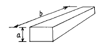
- 0.5배
- 0.8배
- 1.0배
- 1.5배
(정답률: 70%)
43. 하중(荷重)에 관한 설명이다. 옳지 않은 것은?
- 하중은 이동상태에 따라 고정 하중과 이동하중으로 분류된다.
- 하중은 작용하는 면적의 대소에 의해 집중하중과 분포하중으로 나눈다.
- 고정하중은 동하중 또는 활하중이라고도 한다.
- 하중이 일정한 면적에 동일한 세력으로 분포된 것을 등분포하중이라 한다.
(정답률: 84%)
44. 0.5B 붉은벽돌 쌓기 1m2에 소요되는 벽돌의 양은 얼마인가?(단, 줄눈간격은 1cm이며, 붉은벽돌 할증률은 3%이고 규격은 표준형임.)
- 75매
- 77매
- 92매
- 96매
(정답률: 55%)
45. 다음 시멘트에 대한 설명 중 옳지 않은 것은?
- 시멘트는 분말도가 많은 것 일수록 수화작용이 빨라진다.
- 시멘트의 응결온도는 20 ± 3℃정도가 적당하다.
- 시멘트는 하절기 고온다습 할 때 풍화하기 쉽다.
- 자연상태에서 풍화한 시멘트라도 압축강도에는 변화가 없다.
(정답률: 82%)
46. 다음 중 시공도에 속하는 것은?
- 공사 입찰을 보기 위한 도면
- 공사금을 산출하기 위한 도면
- 공사 수행을 위한 개괄적인 도면
- 공사의 방법, 순서 등 필요한 사항을 표시한 도면
(정답률: 65%)
47. 다음 토취장 및 골재원에 관한 설명 중 옳지 않는 것은?
- 설계설명서에 그 위치를 표시하여야 한다.
- 토취장은 품질과 양 및 거리를 감안하여 설계한다.
- 토취장은 가급적 매입하여 사용한다.
- 토취장은 사용 후 정지하고 사방공사를 하여야 한다.
(정답률: 64%)
48. 목재의 벌목시 무게가 20㎏이고, 절대건조시의 무게가 15㎏일 때 이 목재의 함수율은?
- 12%
- 25%
- 33%
- 75%
(정답률: 50%)
49. 공사의 발주방법 중 일정한 자격을 가진 불특정 다수의 희망자를 경쟁에 참여하도록 하여 시공자 다수에게 가장 균등한 기회를 제공하여 입찰하는 방법은?
- 일반경쟁입찰
- 지명경쟁입찰
- 제한적평균가낙찰제
- 대안입찰
(정답률: 77%)
50. 콘크리트의 배합에 있어서 골재의 입도에 관한 설명이다. 옳지 않은 것은?
- 골재의 입도는 콘크리트를 경제적으로 만드는 데 중요한 인자이다.
- 골재의 입도는 같은 크기의 입자로만 이뤄져야 좋다.
- 골재의 입도는 시멘트풀과 밀접한 관계가 있다.
- 골재의 입도를 알기 위해서는 골재의 체가름 시험을 한다.
(정답률: 77%)
51. 관수시설에 관한 설명이다. 옳지 않는 것은?
- 스프링클러는 고정식과 회전식이 있다.
- 팝업스프링클러는 물공급이 중단되면 원위치로 돌아간다.
- 에미터는 스프링클러보다 높은 압력이 필요하다.
- 에미터는 교목이나 관목의 관수에 적당하다.
(정답률: 20%)
52. 원지반의 모래질흙 3,000m3와 점질토 2,000m3를 굴착하여 6m3적재 덤프트럭으로 성토현장에서 반입하고 다졌다. 소요 덤프트럭 대수와 다진 후의 성토량은 얼마인가? (단,모래질흙 : L = 1.25 C = 0.88 점토질 : L = 1.30 C = 0.99 이다.)
- 770대, 6,350m3
- 656대, 5,430m3
- 833대, 4,530m3
- 1,⑤8대, 4,620m3
(정답률: 50%)
53. 외장재로 가장 많이 이용하는 석재는?
- 화강암
- 응회암
- 석회암
- 대리석
(정답률: 60%)
54. 심토층 배수의 역할이라고 할 수 없는 것은?
- 낮은 평탄지역의 지하수위를 낮추기 위함
- 불안정한 지반제거
- 지하에 있는 배수관과 결합하여 표면 유출을 운반 하여 처리
- 건조를 방지하기 위한 토양 보습력 증진
(정답률: 56%)
55. 어느 옹벽에 작용하는 전도모멘트는 950kg.m, 활동력은 1,150kg/m2이다. 이 옹벽이 이러한 전도와 활동에 대해 안정할 수 있는 조합으로만 된 것은?(단, A는 전도저항모멘트, B는 활동저항력을 나타낸다.)
- A : 1,300kg.m, B : 1,500kg/m2
- A : 1,300kg.m, B : 2,400kg/m2
- A : 2,000kg.m, B : 2,400kg/m2
- A : 2,000kg.m, B : 1,500kg/m2
(정답률: 53%)
56. 할증율에 대한 설명으로 맞지 않는 것은?
- 잔디의 할증율은 5%이다
- 조경수목의 할증율은 10%이다.
- 시멘트의 할증율은 정치식일 때는 2%이다.
- 품셈표에 따라 할증율이 포함되어 있는 것도 있다.
(정답률: 67%)
57. 살수관계시설의 설계시 살수강도를 결정하는데 영향을 주는 요인에 해당하지 않은 것은?
- 토양의 흡수력
- 식물의 살수요구량
- 공급수량을 살수하는 시간계획
- 강우강도
(정답률: 34%)
58. 재료가 많이 소요되며, 3m 내외로 낮은 옹벽에 많이 쓰이는 가장 단순한 옹벽방법은?
- 캔티레버옹벽
- 부축벽옹벽
- 중력식옹벽
- 역T형 옹벽
(정답률: 알수없음)
59. 비탈면의 안정을 위한 시공법이라 볼 수 없는 것은?
- 격자블록 설치공법
- 잔디평떼 식재공법
- 모르터 뿜어붙이기 공법
- 케이슨(caisson)공법
(정답률: 64%)
60. 옥외공간에서 계단의 단높이가 12cm일때 적당한 답면의 폭은?
- 15 - 20 cm
- 20 - 25 cm
- 25 - 30 cm
- 30 - 35 cm
(정답률: 46%)
4과목: 조경관리
61. 박피된 통나무로 삼각 말목형 지주목을 설치하고자 한다. 교목 10주에 소요되는 목재의 재적은 얼마인가?(단, 지주목 1개의 크기 : 말구직경 10cm, 길이5m 의 소경목이다.)
- 0.⑤m3
- 0.15m3
- 0.50m3
- 1.50m3
(정답률: 23%)
62. 조경수목과 시설물 관리를 위한 예산, 재무, 조직 등의 업무기능을 수행하는 조경관리에 해당하는 것은?
- 유지관리
- 운영관리
- 이용관리
- 사후관리
(정답률: 79%)
63. 조경 관리에서 주로 사용되는 운반 기기의 종류가 아닌것은?
- 크레인
- 포크레인
- 레커차
- 갱모어
(정답률: 64%)
64. 한국 잔디의 해충 중 유충과 성충이 모두 큰 피해를 주는 것은?
- 도둑나방(夜盜蟲)
- 개미류
- 땅강아지
- 풍뎅이류
(정답률: 47%)
65. 토사포장도로의 보수시 노면안정성의 유지를 위하여 필요한 노면의 횡단경사로 가장 알맞은 것은?
- 1 - 3%
- 3 - 5%
- 5 - 7%
- 7 - 9%
(정답률: 43%)
66. 조경 표준시방서에서 제시하고 있는 하자처리 기준에서 일상적으로 수관부 가지의 얼마 이상이 고사할 경우에 고사목으로 판정하고 있는가?
- 1/2
- 1/3
- 2/3
- 3/4
(정답률: 알수없음)
67. 도시공원대장에 기입해야 할 사항이 아닌 것은?
- 공원의 연혁
- 관리방법
- 공원시설에 관한 사항
- 지구단위계획 내용
(정답률: 27%)
68. 수경시설 가동시 많이 발생되는 문제점과 그 대처 방안이 올바르지 않는 것은?
- 펌프는 정상적으로 가동되는데 물이 나오지 않는다 → 모터의 회전 방향이 바뀌어져 물이 나오지 않으므로 패널에서 상을 교체한다.
- 분수대 연출 시 유량이 수시로 변화하면서 안정되지 않는다.→ 워터해머가 발생되는 것이므로 분수대에 수격 방지기를 설치한다.
- 수중펌프도 가동되고 회전 방향도 맞는데 물이 나오지 않는다.→ 물이 흡입되지 않으므로 이물질 제거 등으로 원인을 없앤다.
- 자동급수 밸브에 자동밸브가 누전되어 열린다 → 자동 급수 박스에 습기가 많으므로 에어밴트를 설치하여 통풍시킨다.
(정답률: 58%)
69. 시설물의 유지관리 공사에 있어서 직영공사 혹은 도급 공사로 할 경우에 대한 설명이다. 적당하지 않은 것은?
- 대규모의 기계설비를 필요로 할 때는 도급공사로 한다.
- 긴급을 요하는 공사는 도급공사로 한다.
- 일정기간 연속해서 시행 할 수 없는 공사는 직영 공사로 한다.
- 완성된 형태의 파악이 어려운 공사는 직영공사로 한다.
(정답률: 57%)
70. 조경수목의 유지관리를 위한 올바른 전정 방법이 아닌것은?
- 수목의 지엽이 지나치게 무성한 경우 하계전정으로 가지를 정리한다
- 진달래나 철쭉, 목련류 등의 화목류는 낙화 직전에 춘계 전정을 하면 좋다
- 나무를 이식하기 전에는 단근된 지하부와 균형을 위해 굵은 가지를 친다
- 소나무류는 윤생지의 발생을 억제키 위해 순꺾기를 봄철에 행한다.
(정답률: 72%)
71. 조경 재료 중 식물재료 기능을 설명한 것이다. 내용이 다른 것은?
- 생물로서 생명활동이 행해지는 자연성
- 생장 번식 등을 계속하는 영속성
- 생명체가 변화 유동성 없는 고정성
- 형태가 다양하여 주변시설과의 다양성
(정답률: 62%)
72. 비탈면의 식생공 중에 종자 뿜어 붙이기공에 있어서 압축 공기를 사용한 모르타르건(mortar-gun)으로 뿜어 붙일 때의 재료는?
- 종자, 비료, 파이버(fiber)
- 종자, 비료, 흙, 물
- 종자, 비료, 흙, 짚
- 종자, 비료, 종이, 물
(정답률: 46%)
73. 식물의 관수방법으로서 틀린 것은?
- 수분증발을 활용하기 위하여 햇볕이 나는 정오에 실시한다.
- 땅이 흠뻑 젖도록 관수한다.
- 잎과 줄기에도 관수하는 것이 좋다.
- 필요시 영양제를 혼합하여 관수하여도 좋다.
(정답률: 54%)
74. 다음 중 가장 많은 전정을 요하는 수종은?
- 회화나무, 팽나무
- 느티나무, 독일가문비
- 팽나무, 자작나무
- 쥐똥나무, 옥향
(정답률: 65%)
75. 방치하였을 때 우수가 침투하여 노상이나 노체에 현저한 파손을 초래함으로써 발생 즉시 보수하여야 하는 포장파손의 유형은?
- 박리
- 표면연화
- 균열
- 파상(波狀)의 요철
(정답률: 60%)
76. 목재의 방부제로서 독성이 약하고 구충용으로 사용되고 있으나 독성이 오래 남는 단점을 지니고 있는 방충제는 다음 중 어느 계통인가?
- 유기염소계통
- 유기인계통
- 붕소계통
- 불소계통
(정답률: 38%)
77. 잔디의 관리에 관한 설명 중 틀린 것은?
- 난지형 잔디의 시비는 주로 봄, 여름에 많이 하고 한지형 잔디는 봄, 가을에 시비한다.
- 한국 잔디는 병해가 적으므로 시비가 어렵지 않으나 서양 잔디는 하기 고온 다습 기간에 발병이 심하므로 주의해야 한다.
- 잔디깎기의 높이는 잔디의 종류, 잔디밭의 사용목적에 따라 다르나 보통 10 - 50mm 정도로 한다.
- 잔디깎기는 한국잔디와 같은 난지형 잔디는 봄,가을 에 한지형 잔디는 고온기에 자주 실시 해야 한다.
(정답률: 55%)
78. 진딧물이 기생하는 곳에는 어떤 병이 잘 발생 되는가?
- 흰가루병
- 그을음병
- 미친개꼬리병
- 탄저병
(정답률: 69%)
79. 고약병 등을 유발시키며 벚나무, 뽕나무, 밤나무 등에 발생하는 흡즙성 해충인 깍지벌레류의 천적으로 맞는 것은?
- 기생봉, 꽃응애류
- 거미
- 긴등기생파리, 독나방고치벌
- 무당벌레류, 풀잠자리
(정답률: 67%)
80. 비료의 영양성분이 10-6-4로 표시된 것에 대한 설명 중 알맞게 설명된 것은?
- 10은 물의 첨가 비율을 나타낸 것이다.
- 6은 질소(N)의 비율을 나타낸 것이다.
- 4는 미량원소의 비율을 나타낸 것이다.
- 질소-인산-칼륨의 비율을 나타낸 것이다.
(정답률: 77%)